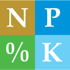

This app calculates the plant-available nitrogen (N), phosphorus (P2O5), potassium (K20), and sulfur (S) nutrient credits (i.e. fertilizer value) of manure from various livestock species that is applied to cropland fields. The app also calculates the N credit available to crops that follow forage legumes in the rotation.
To use this app, first select the manure type (solid or liquid) and indicate if the manure has been analyzed by a laboratory for its nutrient content. If yes, enter the available N, P2O5, K20, and S from the lab report. Next, enter the manure application rate. The nutrient credits from this manure application are displayed at the bottom of the screen. These credits should be subtracted from the base (unadjusted) fertilizer recommendations.
If the manure has not been analyzed for nutrient content, typical nutrient contents (book values) based on lab analysis averages will be used. Select a category for the time from application to incorporation of the manure. Next, identify the appropriate manure source. Then enter the manure application rate. The credits from this manure application are displayed at the bottom of the screen. These credits should be subtracted from the base (unadjusted) fertilizer recommendations.
** Node: Manure nutrient content can vary greatly, manure analysis is encouraged.
To calculate forage legume-N credits, first select the forage legume crop. Legume choices are alfalfa or red clover/birdsfoot trefoil. Next, enter the soil texture of the field. The density of the legume stand at the time of termination also needs to be entered. A good stand of alfalfa is 70% or more alfalfa (> 4 plants/ft2); a fair stand is 30-70% alfalfa (1.5-4 plants/ft2); a poor stand is less than 30% alfalfa (< 1.5 plants/ft2). Lastly, select the amount of plant regrowth (> 8 inches or < 8 inches) present at the time the legume crop is killed. The legume-N nutrient credit available to the crop that follows in the rotation is displayed at the bottom of the screen. This amount should be subtracted from the base (unadjusted) N fertilizer recommendation.
** Node:

Version 1.0
This app was developed by the UW-Madison Nutrient and Pest Management (NPM) program. We would like to acknowledge the following individuals who helped on this project:
Roger Schmidt, NPM Computer Specialist
Mo Lu, NPM Computer Programmer
John Schmidt, NPM Computer Programmer
For more information on manure and legume nutrient credits, see UW-Extension publication A2809 Nutrient Application Guidelines for Field, Vegetable and Fruit Crops in Wisconsin.
Copyright © 2014 Board of Regents of the University of Wisconsin System